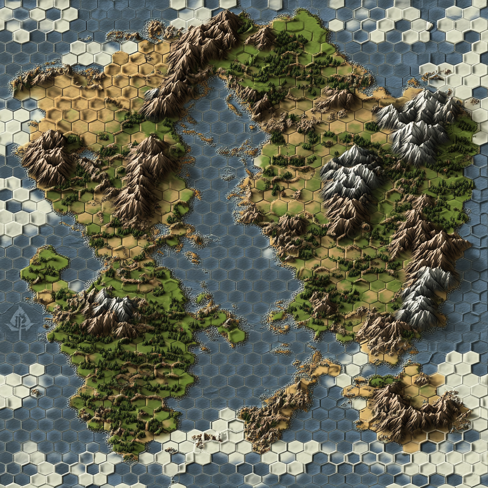

Loading Experience
Explore the five elemental kingdoms of The Missing Spheres universe. Click on each region to learn more about its landscapes, capitals, and guardians.

A realm of endless oceans and floating cities. Ruled by the Council of Tides.
A land of volcanic mountains and eternal flames. Led by the Ember Sovereign.
A domain of floating islands and cloud cities. Governed by the Windborne Council.
A territory of lush forests and crystal caves. Led by the Root Council.
A mystical realm where physical and spiritual worlds intersect. Guided by the Circle of Light.
Click on a kingdom to learn more about it.
Location description will appear here.